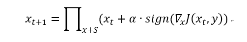
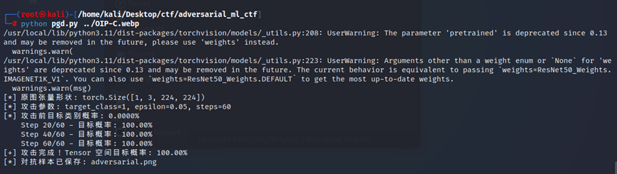

PGD 攻击原理
PGD（Projected Gradient Descent）是一种迭代对抗攻击方法，可以看作是 FGSM 的翻版——K-FGSM。
原论文：https://arxiv.org/pdf/1706.06083.pdf

PGD 攻击的关键参数：
eps— 对抗样本相对于原始输入的最大扰动幅度eps_iter— 每次攻击迭代的步长nb_iter— 攻击迭代次数
攻击脚本
以下是一个通用的 PGD 对抗样本攻击模板，适用于 adversarial_ml_ctf 靶场：
pgd_attack_template.py
#!/usr/bin/env python3
"""
PGD 对抗样本攻击脚本 —— 通用模板
用途：对 ResNet50 目标类别生成对抗样本，通过图像认证
适用：AI Authentication 类题目（金鱼后门 / 任意 ImageNet 类别）
用法：
python3 pgd_attack_template.py <输入图片> --target 1 --epsilon 0.05 --steps 60
# 如果靶场有 /check 接口，自动发送
python3 pgd_attack_template.py input.png --url http://localhost:5000/check
"""
import sys
import argparse
import numpy as np
from PIL import Image
import torch
import torchvision.transforms as transforms
import torchvision.models as models
# ==================== 配置 ====================
DEFAULT_EPSILON = 0.05 # 扰动幅度
DEFAULT_ALPHA = 0.008 # 每次迭代步长
DEFAULT_STEPS = 60 # 迭代次数
IMAGE_SIZE = 224 # ResNet50 输入尺寸
RESIZE_TO = 256 # 先 Resize 到这个尺寸
class PGDAttacker:
"""PGD 对抗样本攻击器"""
def __init__(self, target_class=1, epsilon=0.05, alpha=0.008, steps=60):
self.target_class = target_class
self.epsilon = epsilon
self.alpha = alpha
self.steps = steps
self.model = models.resnet50(pretrained=True)
self.model.eval()
self.transform = transforms.Compose([
transforms.Resize(RESIZE_TO),
transforms.CenterCrop(IMAGE_SIZE),
transforms.ToTensor(),
transforms.Normalize(
mean=[0.485, 0.456, 0.406],
std=[0.229, 0.224, 0.225]
)
])
self.mean = torch.tensor([0.485, 0.456, 0.406]).view(3, 1, 1)
self.std = torch.tensor([0.229, 0.224, 0.225]).view(3, 1, 1)
def load_image(self, image_path):
img = Image.open(image_path).convert('RGB')
img_256 = img.resize((RESIZE_TO, RESIZE_TO), Image.LANCZOS)
tensor = self.transform(img_256).unsqueeze(0)
return img_256, tensor
def attack(self, image_path):
orig_pil_256, x = self.load_image(image_path)
with torch.no_grad():
orig_prob = torch.softmax(self.model(x), dim=1)[0, self.target_class].item() * 100
x_adv = x.clone().detach()
for step in range(self.steps):
x_adv.requires_grad = True
out = self.model(x_adv)
loss = -out[0, self.target_class]
loss.backward()
with torch.no_grad():
x_adv = x_adv - self.alpha * x_adv.grad.sign()
x_adv = torch.maximum(x_adv, x - self.epsilon)
x_adv = torch.minimum(x_adv, x + self.epsilon)
x_adv = x_adv.detach()
if (step + 1) % 20 == 0:
with torch.no_grad():
prob = torch.softmax(self.model(x_adv), dim=1)[0, self.target_class].item() * 100
adv_pil = self._tensor_to_pil_inplace(x_adv, x, orig_pil_256)
return adv_pil
def _tensor_to_pil_inplace(self, x_adv, x_orig, orig_pil_256):
adv_tensor_224 = x_adv.squeeze(0).cpu() * self.std + self.mean
adv_tensor_224 = torch.clamp(adv_tensor_224, 0, 1)
orig_tensor_224 = x_orig.squeeze(0).cpu() * self.std + self.mean
orig_tensor_224 = torch.clamp(orig_tensor_224, 0, 1)
diff_224 = (adv_tensor_224 - orig_tensor_224).permute(1, 2, 0).numpy()
orig_256_arr = np.array(orig_pil_256, dtype=np.float32) / 255.0
adv_256_arr = orig_256_arr.copy()
adv_256_arr[16:240, 16:240] += diff_224
adv_256_arr = np.clip(adv_256_arr, 0, 1)
return Image.fromarray((adv_256_arr * 255).astype(np.uint8))
def save(self, adv_pil, output_path):
adv_pil.save(output_path)
def send_to_server(image, url):
"""将对抗样本发送到靶场 /check 接口"""
import base64, io
buf = io.BytesIO()
image.save(buf, format='PNG')
body = "data:image/png;base64," + base64.b64encode(buf.getvalue()).decode()
import requests
r = requests.post(url, data=body, headers={'Content-Type': 'image/png'}, allow_redirects=True)
return r.text
def main():
parser = argparse.ArgumentParser(description='PGD 对抗样本攻击')
parser.add_argument('input_image', help='输入图片路径')
parser.add_argument('-o', '--output', default='adversarial.png')
parser.add_argument('--target', type=int, default=1)
parser.add_argument('--epsilon', type=float, default=DEFAULT_EPSILON)
parser.add_argument('--alpha', type=float, default=DEFAULT_ALPHA)
parser.add_argument('--steps', type=int, default=DEFAULT_STEPS)
parser.add_argument('--url', default=None)
args = parser.parse_args()
attacker = PGDAttacker(
target_class=args.target, epsilon=args.epsilon,
alpha=args.alpha, steps=args.steps
)
adv_image = attacker.attack(args.input_image)
attacker.save(adv_image, args.output)
if args.url:
result = send_to_server(adv_image, args.url)
print(result)
if __name__ == '__main__':
main()
使用示例
bash
# 生成针对 goldfish (target=1) 的对抗样本
python3 pgd_attack_template.py input.png --target 1 --epsilon 0.05 --steps 60
# 生成后自动发送到靶场验证
python3 pgd_attack_template.py input.png --url http://localhost:5000/check
# 自定义参数（增大扰动和迭代次数）
python3 pgd_attack_template.py input.png --target 7 --epsilon 0.08 --steps 80 -o adv.png --url http://192.168.21.137:5000/check